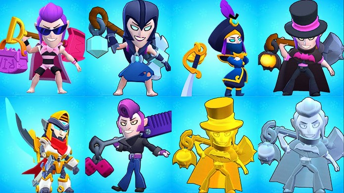

Découvrez tout sur Mortis, le maître des ténèbres et des chauves-souris !
Mortis est un Brawler mythique qui excelle dans les attaques rapprochées et la mobilité. Avec son look de vampire et son attitude mystérieuse, il est l'un des personnages les plus appréciés des joueurs.
Mortis manie une pelle pour ses attaques, et sa vitesse de déplacement rapide lui permet de foncer sur ses ennemis ou d'esquiver leurs tirs. Sa capacité à soigner grâce à son attaque super le rend redoutable en combat rapproché.
| Caractéristique | Valeur |
|---|---|
| Points de vie (niveau max) | 4480 |
| Dégâts par attaque | 1260 |
| Dégâts de l'attaque super | 1260 (par chauve-souris) |
| Vitesse | Très rapide |
Pour maîtriser Mortis, il faut apprendre à jouer de manière agressive tout en évitant les dégâts inutiles. Utilisez sa mobilité pour esquiver et ses capacités pour surprendre vos adversaires :